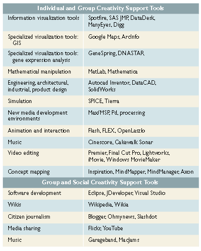
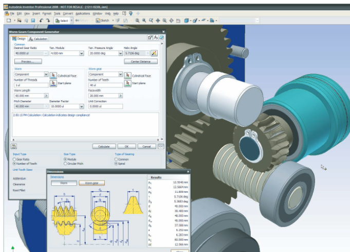

creativity support tools enable discovery and innovation on a broader scale than ever before;
[...] modern creativity support tools also enable new forms of expression for individuals
Creativity includes discovery or invention of a significant idea, pattern, method, or device that gains recognition from accepted leaders in a field, while innovation requires further steps to ensure adoption (see the section “Defining and Supporting Creative Processes”).
[...] information visualization tools, which enable them to make discoveries about their data.
CREATIVITYSUPPORTTOOLS Accelerating Discovery and Innovation
[https://www.dropbox.com/s/4bu4eihkfv8aoxg/Shneiderman-2007-01.mp3?dl=0] (https://www.dropbox.com/s/4bu4eihkfv8aoxg/Shneiderman-2007-01.mp3?dl=0)
[https://www.dropbox.com/s/2viwnb5ltqbo1ct/Shneiderman-2007-02-A-Historic-Shift.mp3?dl=0] (https://www.dropbox.com/s/2viwnb5ltqbo1ct/Shneiderman-2007-02-A-Historic-Shift.mp3?dl=0)
[https://www.dropbox.com/s/04qszaepojy196g/Shneiderman-2007-03-Defining-and-Supporting-Creative-Processes.mp3?dl=0] (https://www.dropbox.com/s/04qszaepojy196g/Shneiderman-2007-03-Defining-and-Supporting-Creative-Processes.mp3?dl=0)

A H ISTORIC S HIFT
[] (https://www.dropbox.com/s/2viwnb5ltqbo1ct/Shneiderman-2007-02-A-Historic-Shift.mp3?dl=0)** [Écouter] (https://www.dropbox.com/s/2viwnb5ltqbo1ct/Shneiderman-2007-02-A-Historic-Shift.mp3?dl=0)**
The chal- lenges they face stem from the vague require- ments for discovery and innovation, as well as fromtheunorthodoxuser behaviors and unclear measures of success
growing community of innovative tool designers and user interface visionaries is addressing a greater chal- lenge and moving from the comparatively safe territory of productivity support tools to the more risky frontier of creativity support tools
ccelerator for creative efforts is the capacity to locate, study, review, and revise existing projects and performances, such as open source soft- ware modules, Web page source code, architectural drawings, or music scores

Autodesk Inventor's Design Accelerators